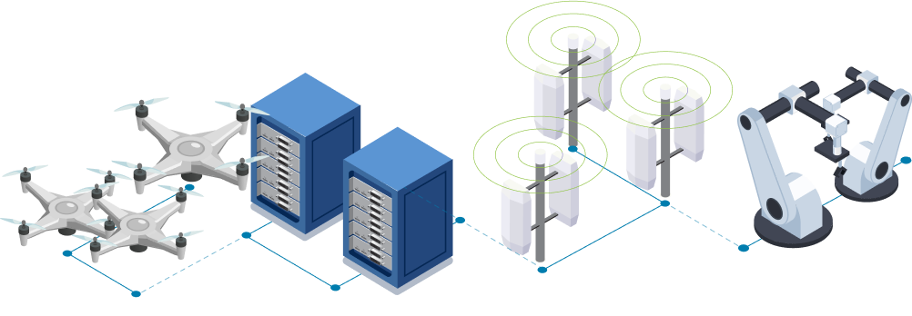
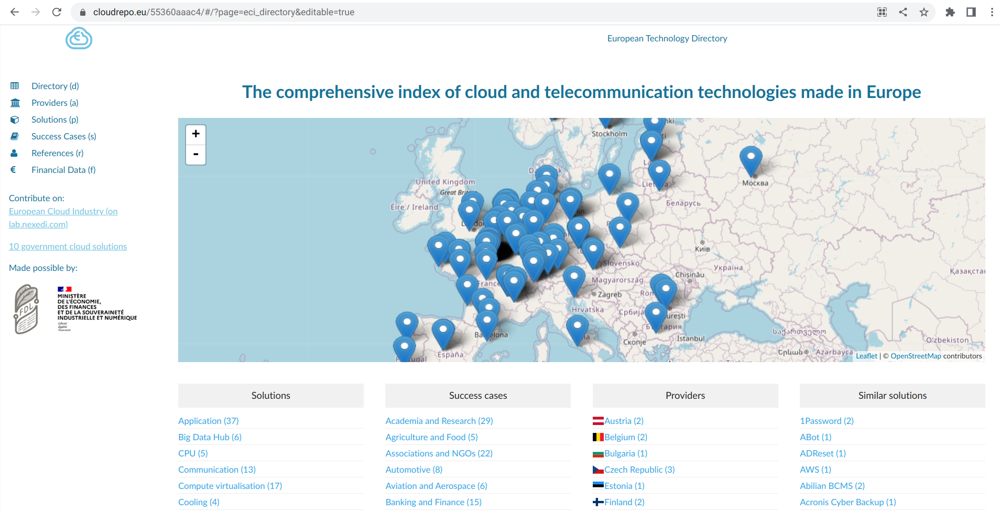
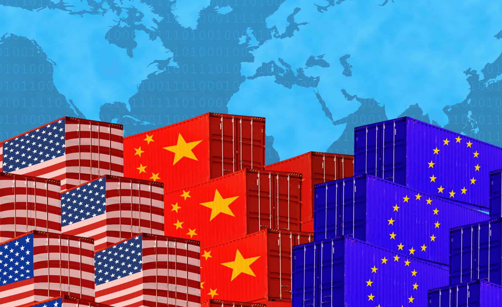
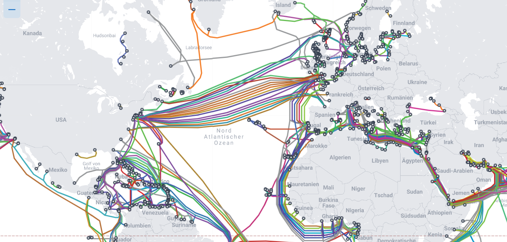
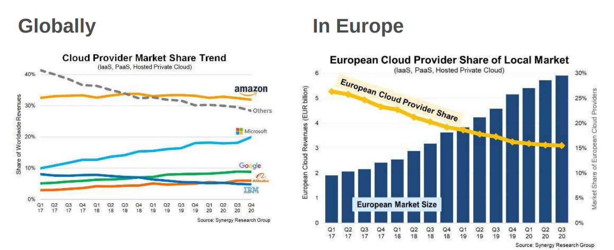
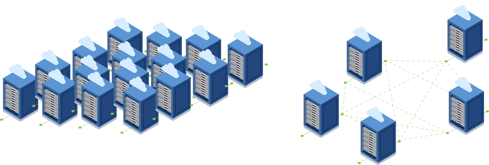
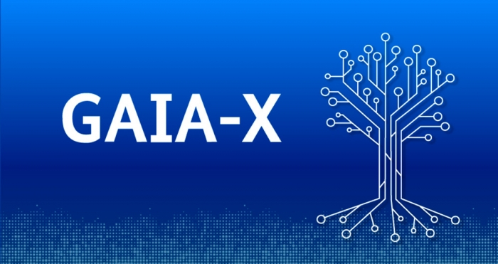

Code QR
Sven Franck

- Allemand, diplômé en DE+USA, Gestion d'innovation, finance, marketing
- Co-Président de Volt France
- Chef de projet Nexedi/Rapid.Space, admin Euclidia
Projets Nexedi/Rapid.Space
- OSIE (Eurostars, 4M€) - piloter un robot dans une chaîne de production avec un logiciel du cloud (réseau en temps réel, accords de niveau de service, sécurité)
- DRONEDGE-E (EDIDP, 4M€) - architecture européenne pour contrôler des essaims de drones autonomes
Partenaires
- Linutronix (DE, Linux temps réel embarqué)
- Olimex (BG, open hardware)
- Fraunhofer Fokus (DE, réseautage industriel, comme INRIA)
- C-Astral Aerospace (SI, constructeur de drones)
Projets Euclidia
- Développer le réseau de ~30 PME
- Organiser des événements, comme Euclidia Now!
- Entretenir Cloudrepo.eu - liste de 300+ technologies européennes dans le domaine du cloud et du télécom
Les enjeux européennes autour de la donnée et du cloud
L'économie mondiale
- ~80 ans de coopération et de démilitarisation
- La paix permet la coopération économique et vice-versa
- La stabilité a créé de vastes interdépendances
L'autonomie est moins rentable que les interdépendances
Photo par CHUTTERSNAP sur Unsplash
Les crises mondiales
- Covid, changement climatique, croissance de la population
- Invasion de l'Ukraine
Instabilité et incertitude
Division en superblocs : États-Unis, Europe, Chine, Russie
Photo par Dmitry Bukhantsov sur Unsplash
Quo vadis, Europa ?
- De nombreuses crises, pourquoi l'Europe n'évolue-t-elle pas ?
- Faut-il pousser plus d'Europe au niveau national ?
- Quelle politique nationale dans un monde de super-blocs (ex. Aukus) ?
L'autonomie n'est pas une panacée, il faut de la coopération.
Photo par Christian Lue sur Unsplash
Quel type de démocratie et d'économie ?
- Chine = 1 parti, marchés contrôlés par l'État (champions de l'État)
- États-Unis = 2 partis, marchés déréglementés (acteurs mondiaux)
- Europe = >2 partis, marchés réglementés (économie diversifiée)
La diversité et les normes sont les atouts de l'économie d'UE.
La diversité et la concurrence sont synonymes de démocratie et d'économie saines, mais il faut l'Europe comme arbitre et puissance normative (à l'intérieur et à l'extérieur).
Resources:
- Comment les marchés européens sont devenus plus compétitifs que les marchés américains : Une étude de la dérive institutionnelle, par Germán Gutiérrez† and Thomas Philippon, June 2018 (lien)
Photo
Adobe Stock photo
Cloud/Telco
Les risques et les enjeux des marchés du cloud/telco en Europe
Les risques
- Coupure des câbles internet sous-marins ou de l'internet lui-même
- Panne du core network 4G/5G (Telco)
- Panne du panneau central OSS/BSS (Cloud)
- Destruction des centre de données par accident/graphite/incendie
- Attaques orchestrées (DDoS, etc.) ou Ransomware (Windows)
Notre infrastructure cloud/telco est vulnérable
Définitions
- Core network = réseau fédérateur - est un conduit central conçu pour transférer le trafic réseau à grande vitesse.
- BSS/OSS = système de soutien des opérations et système de soutien des affaires = point central du réseau
Ressources
- Submarine Cable Map - (lien
- L'internet en Europe du Sud ralentit après des coupures de câbles d’origine criminelle (2022) - (lien)
- Algérie : 5 jours de coupures d’Internet afin d’éviter la fraude... au bac (2020) - (lien)
- La panne du réseau FT Orange pourrait coûter 20 millions d'euros en réparations et en dédommagement des clients (2012) - (lien)
- Incendie chez OVH à Strasbourg (2022) - (lien)
- Une panne totale du cloud d'Amazon serait la chose la plus proche de l'arrêt du monde (2021) - (lien)
- Une attaque par ransomware oblige un hôpital français à transférer des patients (2021) - (lien)
Les enjeux
- Diminution du marché des fournisseurs de services de cloud de l'UE
- Mentalité "Les clouds américains sont les meilleurs"
- Systèmes de certification nationaux dérogatoires ("Cloud de confiance")
- Intransparence et "regulatory capture" (Health Data Hub)
Les conditions ne sont pas favorables pour nos acteurs économiques.
La certification n'aide pas à la souveraineté, elle risque plutôt de réduire la compétitivité. Le marché européen est un grand écosystème, mais diversifié et incapable de faire face à des concurrents "sous stéroïdes". Il faut l'Europe comme arbitre et puissance normative (en interne et en externe).
Ressources
Comment répondre aux risques ?
- Décentralisation = infrastructure Cloud versus Edge
- Résilience = réduction des points de défaillance et des dépendances
- Innovation = une partie du Cloud et d'Edge a été inventée en Europe
- Interopérabilité = contre les fournisseurs de cloud monolithiques
Tout existe en Europe pour créer un (Edge)Cloud européen
A quoi ressemblera le cloud dans les 20 prochaines années ? La sécurité est une combinaison de résilience et de souveraineté. Se concentrer sur l'Edge au lieu d'essayer de construire un équivalent des GAFAM ?
Definitions
Cloud = quelques Centres de Données avec des milliers de serveurs
Edge = des milliers de Centres de Données avec quelques serveurs
Automatisation = gestion entièrement automatisée de l'exploitation d'un service informatique arbitraire.
Ressources
Comment repondre aux enjeux ?
- Digital Markets Act & Data Act (egress fees, frer tiers)
- CBA: les éditeurs d'OSS redevables lorsque d'autres utilisent leur code !?
- SecNumcloud: la certification risque d'étouffer l'innovation -
- Normalisation ? Les plus forts imposent leur standard
La régulation doit soutenir la diversité et la résilience.
Ressources
- Digital Markets Act : entrée en vigueur des règles applicables aux opérateurs numériques pour garantir l'ouverture des marchés (lien)
- Data Act : Data ACT visant à interdire les frais de sortie arbitraires et artificiels, à clarifier le concept d'équivalence fonctionnelle et à interdire le verrouillage des logiciels propriétaires dans le cloud - (lien)
- Loi sur la cyber-résilience : Bonnes intentions et conséquences indésirables - (lien)
- Cloud souverain et Cloud de confiance, affrontement entre Orange et Scaleway - (lien)
Photos
Données
Les risques et les enjeux des marchés du données en Europe
Les risques
- Législation étrangère = accès à n'importe quelle donnée n'importe où
- Droits de propriété numérique (à qui appartient votre séquence ADN ?)
- Authenticité des données (ChatGPT, vidéos DeepFake)
- Surveillance (scores sociaux, reconnaissance faciale, iris-scan, cashless)
- Sécurité et perte de données personnelles sensibles (Health Data Hub)
- Données militarisées - Camebridge analytica
Difficile si sous contrôle d'un gouvernement, pire sous contrôle privé
Ressources
- US Cloud Act, section 702 de la FISA, ou l'Executive Order 12333 (lien, lien)
- La loi sur la protection des informations personnelles de la RPC, le GDPR de la Chine - en bref - (lien)
- AI: Discussion infinie entre Werner Herzog et Slavoj Žižek - (lien)
- Deep Fake Tom Cruise et Paris Hilton - (lien)
- Sytème de crédit social en Chine - (lien)
- Iris-scan en Afghanistan - (lien)
Les enjeux
- RGPD affaibli, vu l'accord US-UE sur la protection des données
- Les initiatives comme Gaia-X sont diluées par d'hyperscalers étrangères
Corporate et regulatory capture, influence d'entités non européennes
Comment répondre aux risques ?

- Législation - L'Europe a besoin de technologies et d'acteurs souverains
- Propriété des données numériques - Ouvrir le débat
- Authenticité - Besoin d'un identifiant fiable.
- Surveillance - pas si, mais quand et où (voir la Chine)
- Sécurité - Stockages décentralisés, recours collectif (surface d'attaque)
- Données militarisées - monétisation des clics vs IA ethique (Chine)
L'Europe doit définir et faire respecter les normes pour les données.
Les législations étrangères (par exemple ITAR) exigent des technologies souveraines et les fournisseurs des alternatives/décentralisation sur le territoire de la France/de l'UE détenus par des entités européennes utilisant des logiciels européens.
Les droits de propriété numérique devraient être discutés - nous avons des droits de propriété physique, certains sont également menacés (smartphone).
Resources:
Comment repondre aux enjeux ?
- Utiliser le GDPR et le puissance normatif comme un avantage compétitif
- Éviter l'influence étrangère dans les initiatives européennes
- Créer des incitations à investir à long terme pour l'industrie
L'Europe devrait jouer sur ses avantages au lieu de les réduire
Quelle est la réponse européenne ?
- Reconnaître les atouts de notre secteur en Europe et les promouvoir.
- Reconnaître la direction du marché (Splinternet) et des crises mondiales.
- Reconnaître l'importance de protéger et réguler l'usage des données et d'IA
- Reconnaître l'ouverture (ex open source) comme avantage concurrentiel de plus
La régulation devrait soutenir notre écosystème européen.
Le Cloud de nouvelle génération de l'Europe ne doit pas copier celui des États-Unis ou de la Chine, mais il faut développer notre version du Cloud.
Les risques mondiaux imposeront la résilience = Edge vs Cloud & Interopérabilité vs Standards & Résilience vs Dépendances
Définitions
- Wikipédia Splinternet - (lien)
Photos
Photo par TheDigitalArtist/Pixaby CC0
Merci beaucoup
- Twitter @SvenFranck